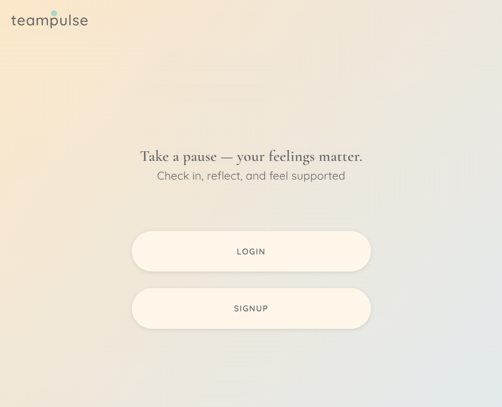
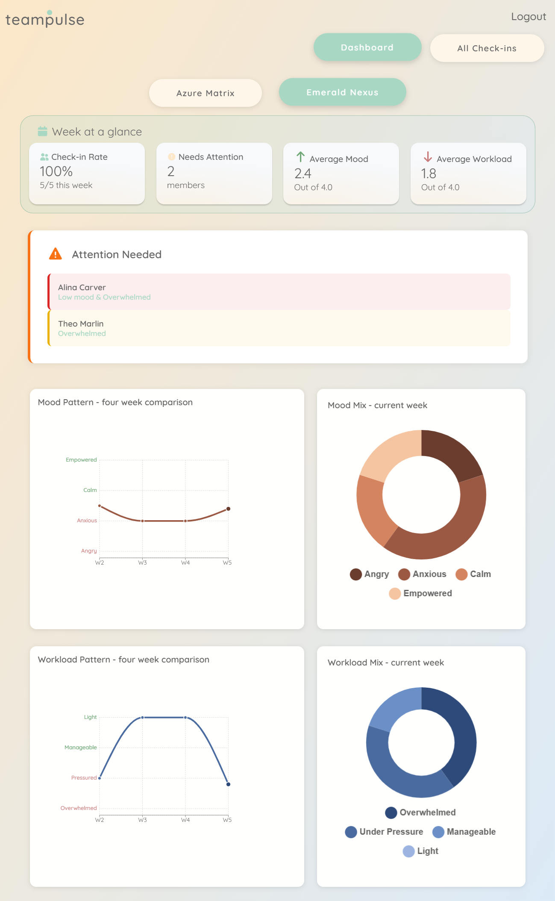
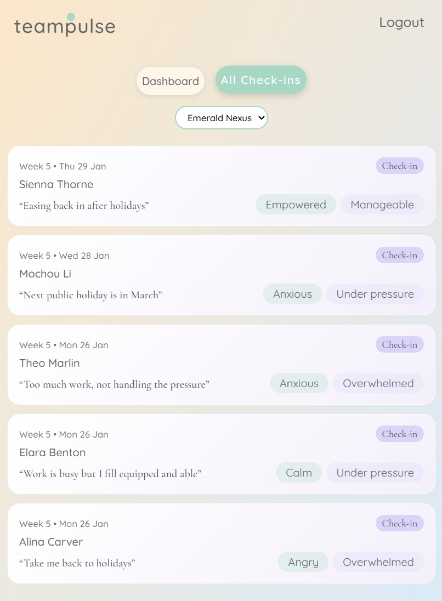

Links
Concept
Group Project for Full-stack Frogs (that's the team name) was to create a mood/workload tracker to allow a manager to monitor their team's wellbeing. A team member was to log their mood and workload every week, whilst a manager can view a dashboard containing aggregated data logged by their team members.
Kudos to the frontend team for making this really pretty.

Notable Features
When a normal user logged in, they're shown the 'Pulse' check in form. But when a manager logged in, they're shown a dashboard containing data visualisations of their team's logged data. This required setting up different user roles and permissions in the backend, and then ensuring that the frontend displayed the correct information based on the user's role. Below are the 2 screenshots, for user and manager respectively.
-
Home Page (General Mode)

-
Manager Dashboard
 -
Manager List View of Team Pulse

Challenges
I can only write about challenges faced by the backend, as I chose to not contribute to the frontend.
Weekly Limitations
Notable challenge was in ensuring that a team member can only log their data once a week, defining what a 'week' meant, and in displaying the data segregated by team as a manager can manage multiple teams. Discussion had around this topic started a lot of discussion about timezones, and what would be defined as a "week". 2 people on opposite ends of the globe could be logging their Pulse at the same time, and yet for one of them it's Sunday night and for the other it's Monday morning. Should the data be logged against separate weeks?
Adding to the complexity was that whilst Python (the backend) had built in library to determine what the current week index was, JavaScript (the frontend) did not. This meant that we would had to implement this in the front end, and frankly it was beginning to get very complicated. In the end, we decided to let the frontend simply send the current date and time to the backend, and let the backend determine if the user had already logged their Pulse for the current week or not.
The design for the database changed as well to accomodate this weekly check. Originally we were only going to store the timestamp and calculate the week index on the fly, but this would had meant more calculations and checks every time a user tried to log their Pulse. Instead, we decided to store the week index along with the timestamp, so that checking if a user had already logged their Pulse for the week would be a simple database query.